Galerie Pulls et Gilets

Gilet Blanc en Laine
- Petit gilet bébé unisexe en laine acrylique
- Réalisé au point mousse et jersey
- Fermé par quatre boutons pression

Gilet Blanc en Laine avec petit Noeud
- Gilet pour fillette en laine blanche acrylique à motifs coeur de couleur noire
- Réalisé au point d'alvéole, pour le motif général et au jacquard, pour le bas des manches ainsi que le col
- Poche ornée d'un petit ruban boutonné noir et blanc
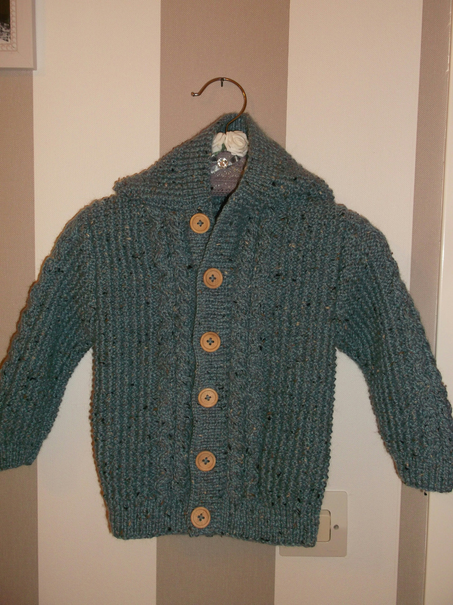
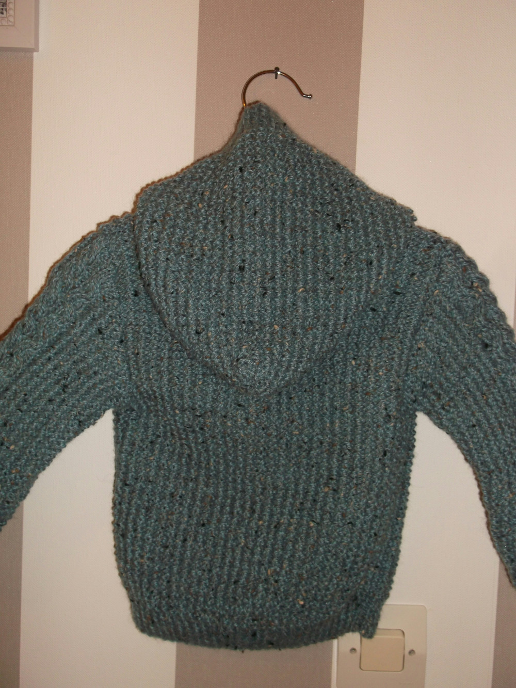
Gilet Gris en Laine
- Gilet à capuche pour petit garçon en laine acrylique
- Tricoté au point de sable
- Motif torsadé sur le devant en bordure de la boutonnière ainsi que sur les manches
- Six gros boutons en bois
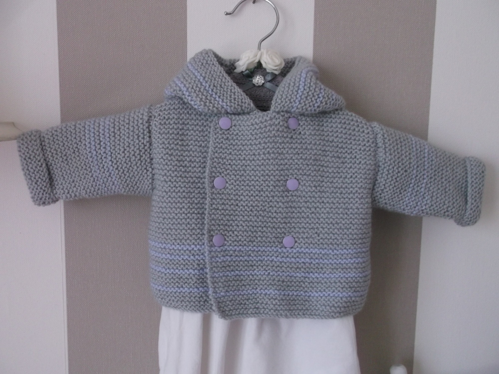
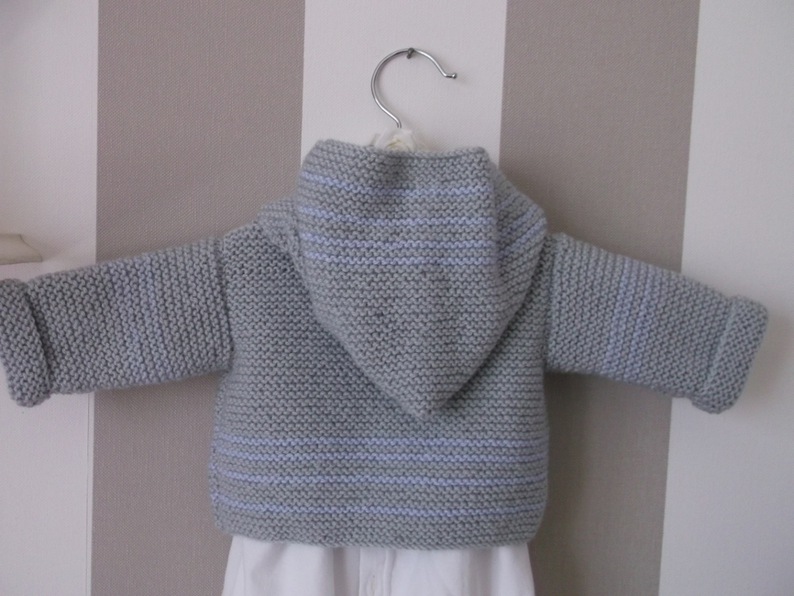
Gilet à Capuche Rayé Bleu et Gris en Laine
- Gilet bébé à capuche tricoté en laine acrylique grise et bleue
- Point mousse
- Six boutons pression
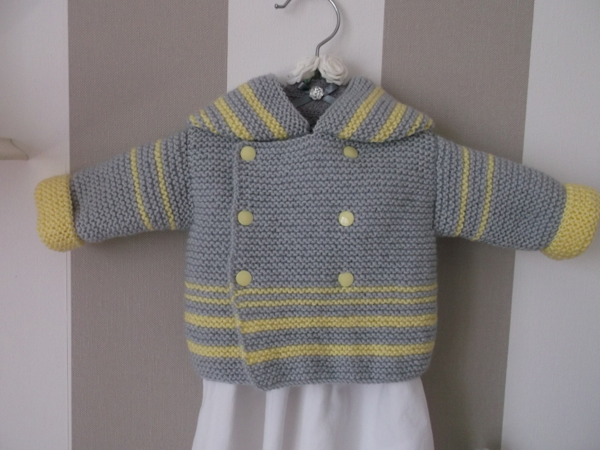
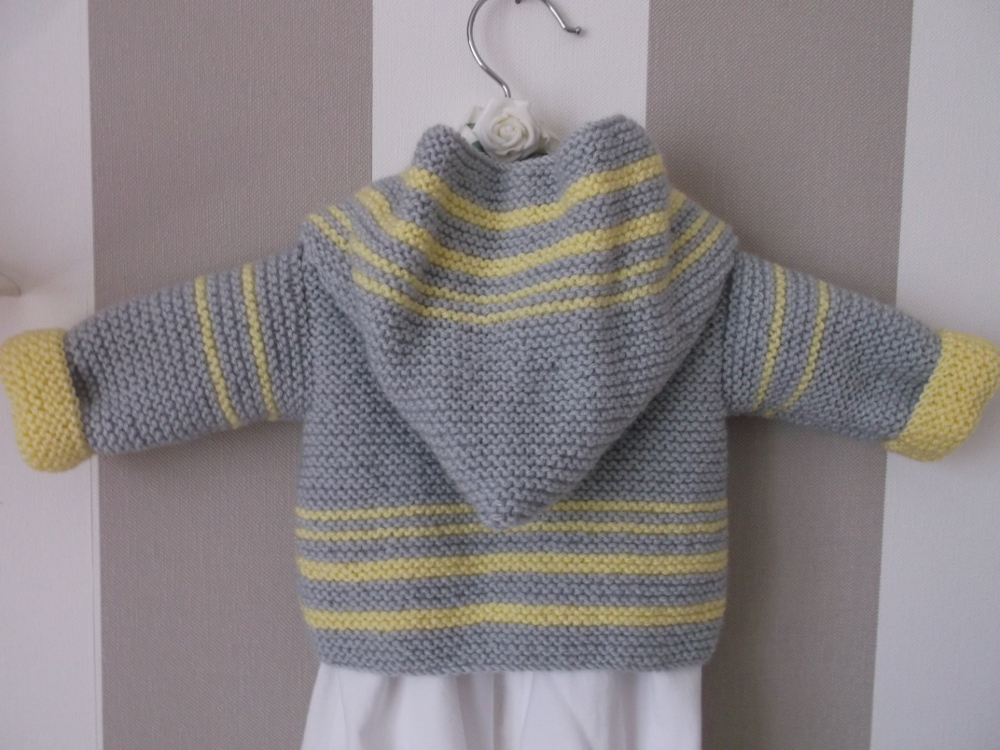
Gilet à Capuche Rayé Gris et Jaune en Laine
- Gilet bébé à capuche tricoté en laine acrylique grise et jaune
- Point mousse
- Six boutons pression
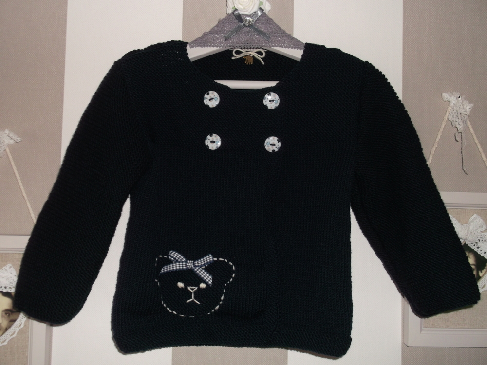
Gilet Noir en Laine
- Gilet fillette en laine acrylique noire
- Quatre bouton de motif floral pour la fermeture avant
- Motif ourson brodé sur la poche avant et orné d'un petit ruban quadrillé
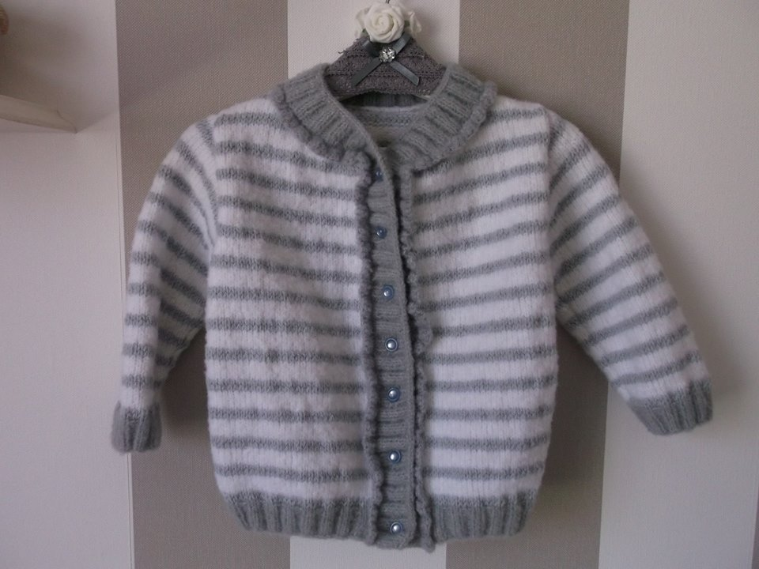
Gilet Rayé Blanc en Laine
- Gilet fillette rayé gris et blanc en laine acrylique particulièrement douce
- Fermeture avant avec sept boutons gris nacrés
- Point de côte 2/2 et jersey endroit rayé
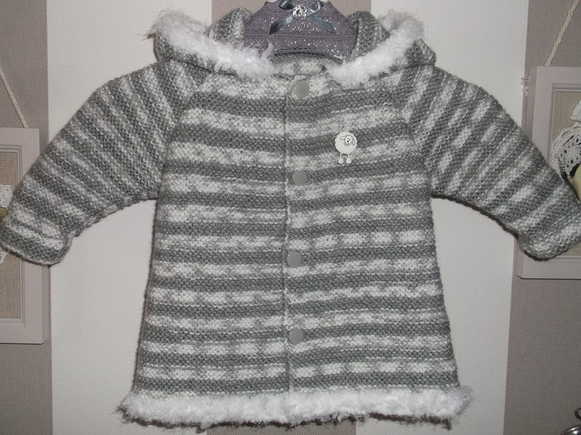
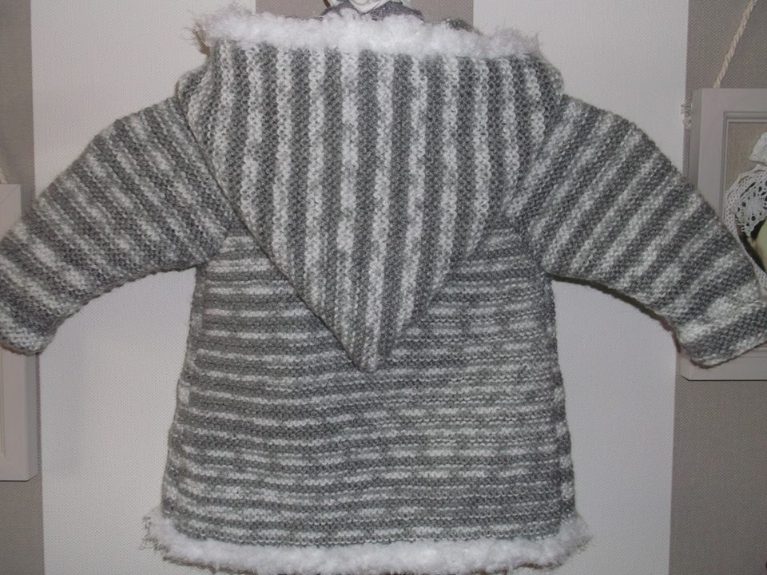
Gilet à Capuche Rayé Gris en Laine
- Gilet à capuche unisexe en laine acryliqe chiné grise et blanche
- Tricoté en point mousse
- Bordure de capuche et bas du manteau en laine "neige"
- Petit bouton de décoration sur l'avant gauche du manteau en forme de mouton
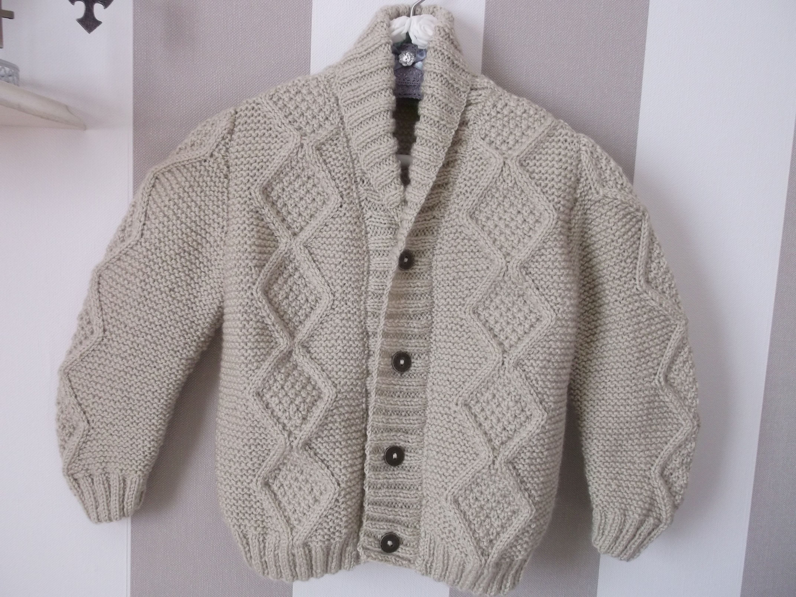
Gilet Ecru
- Gilet garçon en col châle de couleur écrue tricoté en acrylique
- Réalisé au point de jersey envers
- Motifs ornant les manches et l'avant du gilet d'inspiration irlandaise
- Quatre boutons en métal vieilli pour la fermeture du gilet
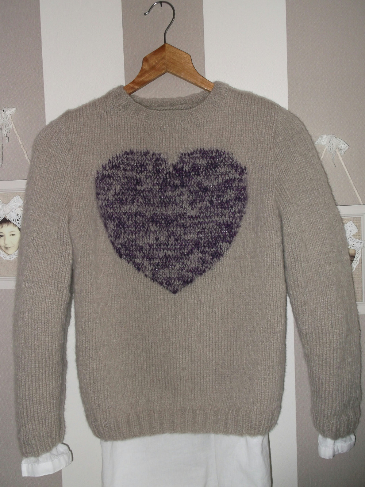
Pull Beige Motif Coeur
- Pull beige tricoté en laine acrilyque beige
- Point de jersey
- Motif coeur brodé à la main en laine acrylique de couleur violette